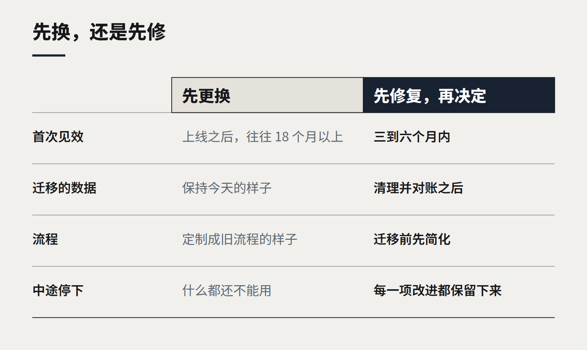

洞察
战略与交付
反对更换 ERP 的理由
大多数集成之痛，其实是穿着技术外衣的流程之痛。在承诺一次迁移之前，如何分辨两者。

每一家成长中的企业，迟早都会开这样一个会：有人说 ERP 必须换掉。月结要两周；没人相信库存数字；每接一个新销售渠道都得靠一个开发者加一张表格；系统老旧、供应商迟缓，而一个光鲜的云端替代品“只要十八个月”就能上线。
有时候，更换确实是对的。但以我们的经验，更多时候它只是一种昂贵的方式，把同样的问题搬到新平台上。签约之前，值得先弄清楚你面对的到底是哪一类问题。
看起来是技术问题，其实不是
许多对 ERP 的抱怨，其实是对企业如何使用它的抱怨。
- “数字对不上。” 通常是两个团队在不同地方录入同一件事，或者产品编码结构从来没有清理过。新系统会原样导入这团乱麻。
- “月结太慢。” 往往是一连串手工对账，而它们存在的原因是上游数据来得晚或者来得错。ERP 只是感受到疼痛的地方，而不是疼痛的源头。
- “什么都接不上。” 常常缺的是集成层，而不是 API。无论新旧 ERP，都需要中间有一样东西来负责系统之间的映射。
- “只有老王知道它怎么运作。” 这是知识问题。除非有意识地解决它，否则上线十八个月后，老王也会是唯一懂新系统的人。

更换之前要问的问题
在更换方案提交董事会之前，我们会请客户回答五个问题：
- 具体是哪些流程出了问题，每一个每月造成多少损失？
- 每一个的根本原因，是软件、数据、流程，还是人？
- 排名前三的问题，能否在现有系统内、借助集成层或更好的数据，在六个月内解决？
- 迁移的那一年，企业会停止做哪些事？
- 供应商的标准流程是什么样的，我们是否准备好采纳它，而不是做定制？
如果大多数根因是数据和流程，就先解决它们。收益几个月就能到来，而不是几年——而且如果日后真的更换 ERP，你迁移的是干净的数据和被充分理解的流程，这恰恰是迁移成功最重要的预测因素。
什么时候该换
当平台确实无法满足业务需要时，更换才站得住脚：它已停止技术支持；它无法承载新的商业模式，比如订阅制或多实体；它无法满足安全或合规要求；或者维持它的成本已经超过了迁移的成本。即便如此，工作顺序依然重要：先清理数据、简化流程、搭建集成层。它们能挺过迁移，还能让迁移更短。
真正的资产是集成层
我们见过客户做出的最持久的投资，不是 ERP 本身，而是它周围的那一层：一套清晰的 API 和事件，企业其他部分都通过它们交流，ERP 则位于其后。一旦有了这一层，ERP 就可以分块替换，而不是一次性全换，十八个月的大项目也就变成了一连串三个月的小项目。
继续阅读
全部洞察